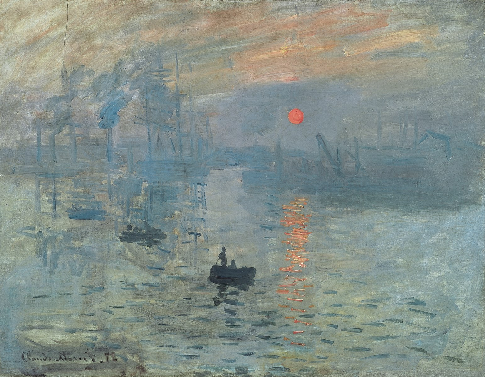

Як народився імпресіонізм: «Враження. Схід сонця» Клода Моне
Картина, що дала ім’я художньому руху
Про картину
- Створена у 1872 році
- Зображує порт Гавра під час сходу сонця
- Критики назвали її «враженням», що дало назву стилю імпресіонізму
- Вона вплинула на покоління художників, що шукали нові способи зображення світу
Цікаві факти
- Моне часто малював одне місце у різний час доби, щоб дослідити світло.
- «Враження. Схід сонця» зберігається в Музеї Мармоттан в Парижі